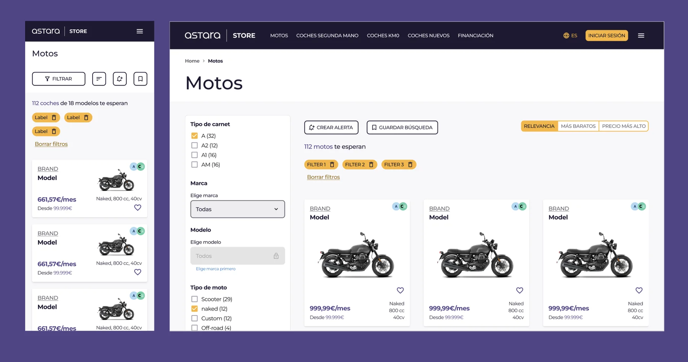
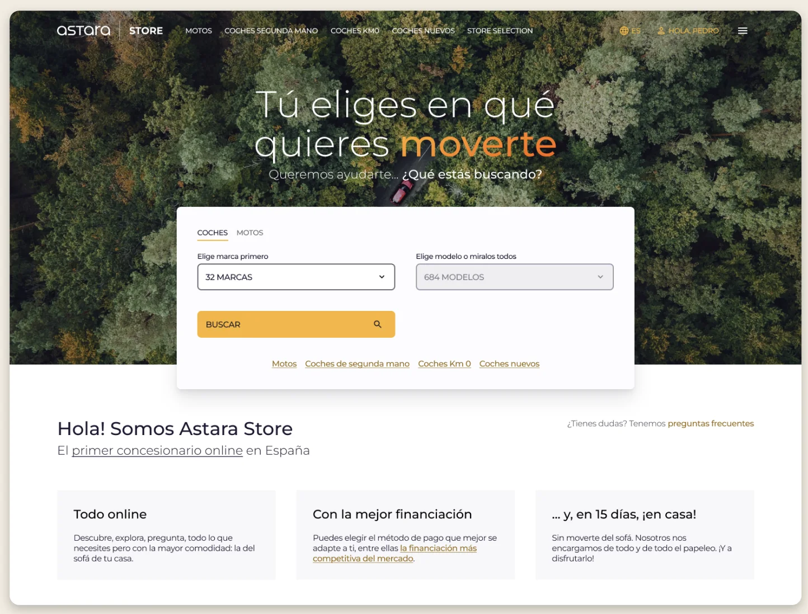
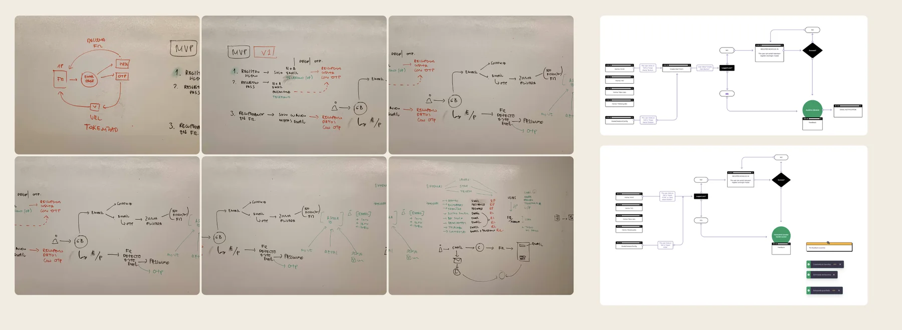
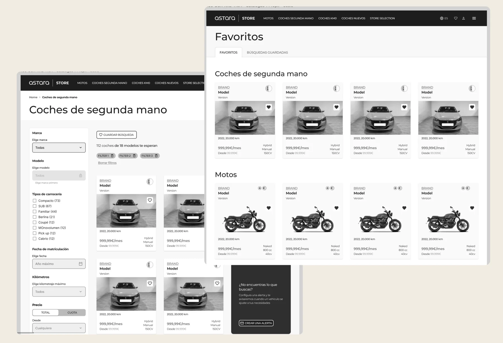
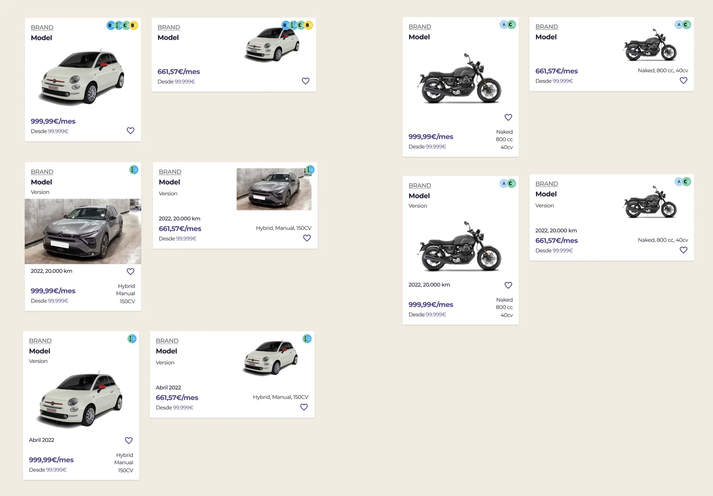
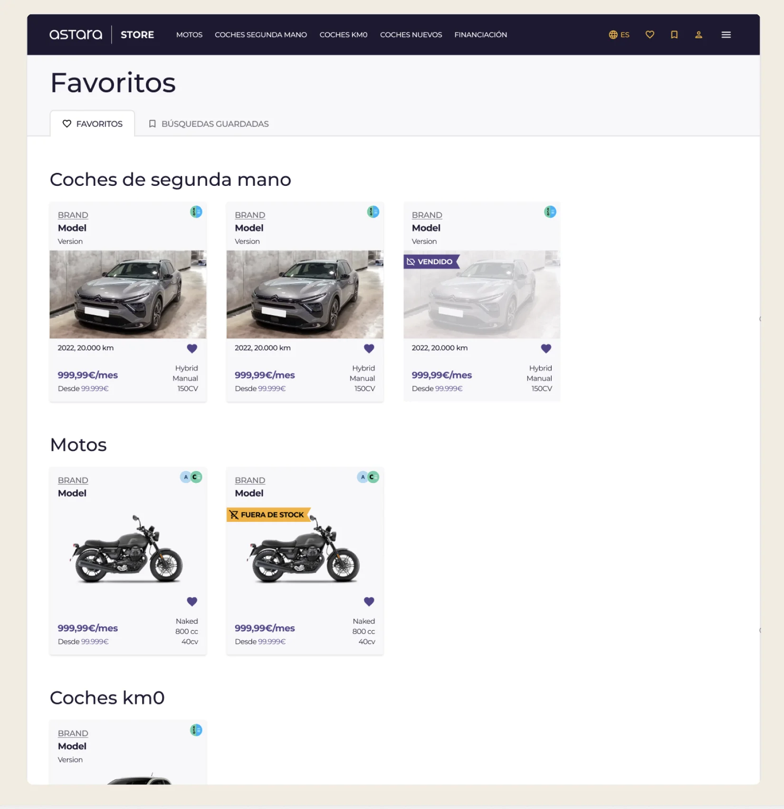
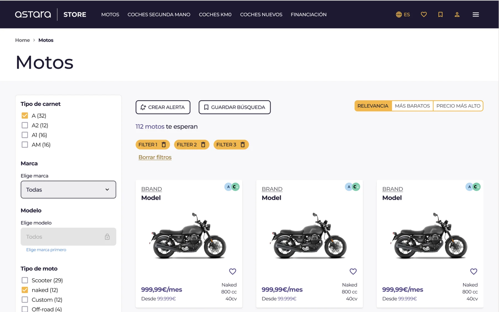
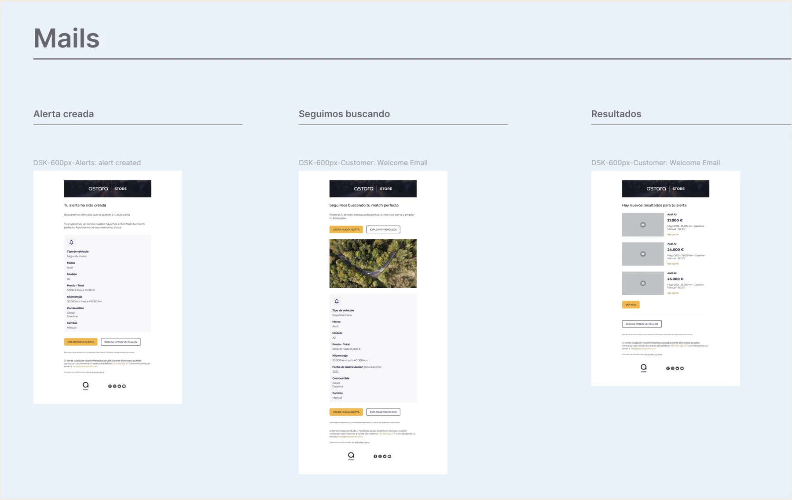
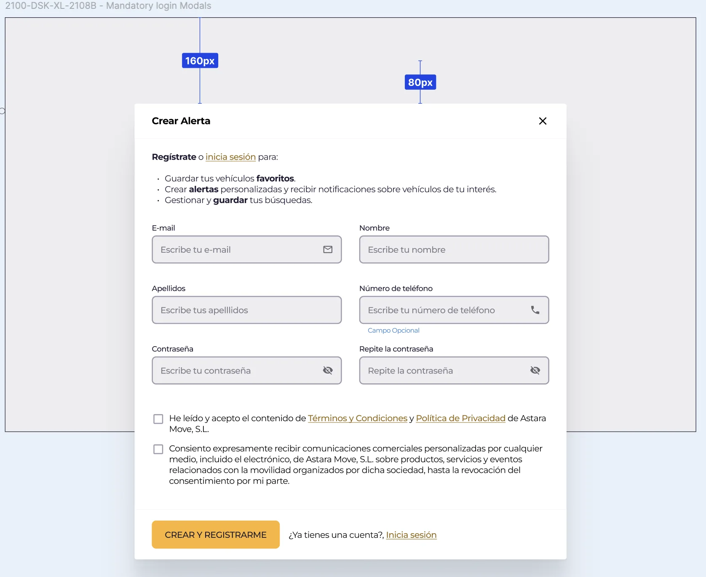

Alertas, favoritos y búsquedas guardadas
Mejorar la búsqueda y el descubrimiento en un marketplace de coches y motos con tres funcionalidades clave.

Contexto
Astara Store era un marketplace online de coches y motos.

El reto
Mi objetivo principal era mejorar esa experiencia de búsqueda y descubrimiento.
Para lograrlo, nos centramos en investigar y diseñar estas tres funcionalidades clave:
Investigación
Empecé la investigación analizando a la competencia. Me centré en cómo otras webs de coches integraban sus Favoritos, Búsquedas guardadas y Alertas, para aprender de sus soluciones y buenas prácticas.

Trabajé con mi Product Owner en una sesión de whiteboarding para mapear estos flujos. El objetivo era validar una V1 y asegurarnos de estar alineados antes de empezar con el diseño visual.

Ideación
- Con los flujos de usuario aprobados, empecé a traducirlos en wireframes de baja fidelidad.
- En Astara teníamos un UI kit en escala de grises que me permitía construir y probar estas estructuras rápidamente.


El objetivo era encontrar una única solución que resultara intuitiva y funcionara a la perfección en todas las variantes de card.
La solución
♥ Favoritos
Esta fue la solución que encontré para garantizar la consistencia en todos los layouts de cards de cada tipo de vehículo.

Página dedicada de «Favoritos»
- Para dar a los usuarios un lugar central donde gestionar lo que encuentran, diseñé esta página dedicada de «Favoritos», que también incluye sus «Búsquedas guardadas».
- Otra decisión fue agrupar automáticamente los elementos por tipo de vehículo. Esto ayuda a los usuarios a mantenerse organizados y a comparar fácilmente las opciones que están considerando.

🔎 Búsquedas guardadas
- Para resolver el problema del trabajo repetitivo, diseñé la pestaña de «Búsquedas guardadas», donde los usuarios pueden repetir búsquedas complejas con un solo clic.
- La funcionalidad clave aquí es el botón «Crear alerta». Actúa como un puente intuitivo que permite a los usuarios convertir fácilmente una búsqueda guardada pasiva en una alerta proactiva y automática.

🔔 Alertas
- Para que la funcionalidad de «Alertas» fuera potente y fácil de encontrar, diseñé dos puntos de entrada principales para crearlas.
- Los usuarios pueden crear una alerta directamente desde una página de resultados de búsqueda o desde su lista de búsquedas guardadas anteriormente.

Formulario de creación de alertas
- Para el formulario de «Crear alerta», tomé la decisión deliberada de simplificar la experiencia sin incluir todos los filtros posibles.
- En colaboración con mi Product Owner, identificamos y priorizamos solo los filtros más esenciales necesarios para crear una alerta con sentido.
- Esto reduce la complejidad para el usuario y hace el proceso mucho más rápido y menos abrumador.

Notificaciones por email
La experiencia de «Alertas» va más allá de la web y llega a la bandeja de entrada del usuario. Un último paso crucial fue diseñar el sistema completo de notificaciones por email.

Login y registro rápidos
- Para habilitar estas nuevas funcionalidades de personalización, los usuarios primero necesitaban una cuenta. Esto exigía diseñar un flujo de login y registro rápido y fluido.
- El objetivo era que este paso tuviera la mínima fricción posible, apareciendo en contexto cuando el usuario intenta guardar por primera vez un vehículo o una búsqueda.
